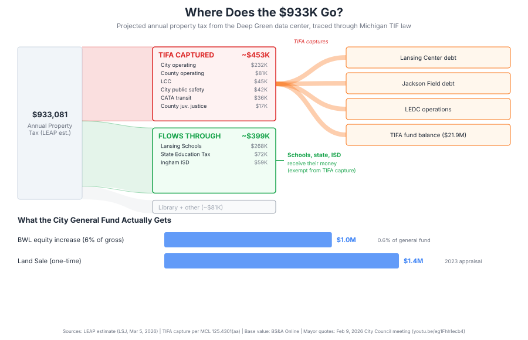

Lansing: Deep Green's Projected $933K in Tax Revenue Does Not Reach the General Fund
"The taxes themselves will go right into our general fund."
"Sorry, I have to correct what I just said. The property, it looks like it's in the TIFA district. So increased taxes would get captured by the TIFA. So everything but our debt millages would get captured by our TIFA, which would then go into repaying that debt and then any uses that we could use for the Lansing Center and the ballpark and the other things that we send through LEDC... I don't know those numbers, but I didn't realize that. And staff is watching and they're correcting me."
Mayor Andy Schor, two statements separated by approximately two minutes, Lansing City Council meeting, February 9, 2026 (0:58:56 and 1:00:59)
LANSING, Mich. -- The Lansing Economic Area Partnership projects $933,081 in average annual property tax revenue from the proposed Deep Green Technologies data center, according to the Lansing State Journal (March 5, 2026). That figure has been repeated by the Lansing Regional Chamber of Commerce, the Michigan Advance, and the mayor's office. It is the single most cited public benefit of the project. It is also misleading, because it does not account for where the money goes after it is collected.
Under Michigan's Tax Increment Finance Authority Act (MCL 125.4301(aa), Act 57 of 2018), roughly half of that $933K is captured by Lansing's TIFA before it reaches any taxing authority's general fund. The city's own share, $274,344, is almost entirely diverted to service debt on the Lansing Center and Jackson Field. The mayor confirmed this on camera at the February 9, 2026 City Council meeting, after initially telling the council the opposite.
The Estimate
LEAP produced the $933,081 figure for Deep Green, not as an independent analysis. Emma Bostwick, LEAP's vice president of business attraction, told the Lansing State Journal that the estimate projects $19.6 million in property taxes from 2028 through 2047 across 20 different millages. The City of Lansing Assessor's office produced a separate estimate of $901,110. At the February 9 council meeting, the mayor cited $873,000.
LEAP used 55% of fair market value as its assessment basis. Michigan law sets State Equalized Value at 50% of true cash value (MCL 211.27a). Using 55% inflates the projection by 10%. Bostwick described the methodology as "the utmost conservative estimate." By the legal standard, it is the opposite.
The LSJ published LEAP's breakdown by taxing authority:
| Taxing Authority | Average Annual Amount |
|---|---|
| City of Lansing (operating + public safety) | $274,344 |
| Lansing School District | $268,302 |
| Ingham County operating | $80,700 |
| State Education Tax (6 mills) | $71,755 |
| Ingham ISD | $59,052 |
| Lansing Community College | $44,980 |
| CATA transit | $35,741 |
| Capital Area District Library | $18,640 |
| Ingham County juvenile justice | $17,312 |
| Other (10 dedicated millages) | ~$62,255 |
| Total | $933,081 |
Source: LEAP analysis as reported in Lansing State Journal, March 5, 2026. City share = $232,487 operating + $41,857 public safety.
That is the gross tax bill across all 20 millages and all taxing jurisdictions. The city's share is $274,344. The question is what happens to it next.
The TIFA
The Deep Green site is within Lansing's Tax Increment Finance Authority district. The mayor confirmed this on camera at the February 9 meeting after being corrected by staff.
When the TIFA district was created, the taxable value of every parcel inside it was frozen as the "base." All growth in taxable value above that base is the "increment." Under MCL 125.4301(aa), the TIFA captures tax revenue from the increment levied by local taxing jurisdictions. It does not capture the State Education Tax, local school district taxes, or intermediate school district taxes. Voted debt millages and library millages approved after 2016 (2016 PA 505-510) are also exempt from capture. (Reference: Michigan Senate Fiscal Agency, "Tax Increment Financing in Michigan," Winter 2016.)
Applied to the LEAP numbers:
| Authority | Amount | TIFA Captures? |
|---|---|---|
| City of Lansing operating | $232,487 | Yes. Local municipal tax. |
| City public safety | $41,857 | Yes. Local municipal tax. |
| Ingham County operating | $80,700 | Yes. Local county tax. |
| Lansing Community College | $44,980 | Yes. Not a "school district" for TIF purposes. |
| CATA transit | $35,741 | Yes. Local transit authority. |
| County juvenile justice | $17,312 | Yes. Local county millage. |
| Subtotal captured | ~$453,077 |
| Authority | Amount | TIFA Captures? |
|---|---|---|
| Lansing School District | $268,302 | No. Excluded, MCL 125.4301(aa)(i). |
| State Education Tax | $71,755 | No. Excluded. |
| Ingham ISD | $59,052 | No. Excluded. |
| Subtotal pass-through | ~$399,109 |
Library ($18,640) and other dedicated millages (~$62K) depend on type and approval date.
The schools, the state, and the ISD receive their share. That is real revenue. The city's $274,344, the number that funds police, fire, roads, and code enforcement, is captured by the TIFA.
Where the Captured Revenue Goes
The TIFA currently captures $7.76 million per year in tax increment revenue, according to the City of Lansing FY2026 Adopted Budget (Section D, Affiliated Agency Budgets). That revenue services debt on the Lansing Center (convention center), debt on Jackson Field (minor league ballpark), LEDC operations and development projects, and a $21.9 million accumulated fund balance.
The TIFA board is appointed by the mayor. City spokesperson Scott Bean confirmed to the Lansing State Journal (March 5, 2026) that the TIFA "is currently paying debt obligations" related to parking services and the Lansing Center.
The Base Value
The TIFA only captures the increment. Taxes on the frozen base value still flow to taxing authorities normally. The four parcels in the Deep Green rezoning (Z-3-2026 public hearing notice, City Clerk) are:
| Parcel | Address | Current Owner | Current Taxable Value |
|---|---|---|---|
| 33-01-01-16-427-122 | E Kalamazoo St | City of Lansing | $0 (government exempt) |
| 33-01-01-16-427-082 | 229 S Cedar St | City of Lansing | $0 (government exempt) |
| 33-01-01-16-427-051 | S Cedar St | City of Lansing | $0 (government exempt) |
| 33-01-01-16-427-192 | 220 S Larch St | Private LLC | $144,500 |
Sources: City of Lansing GeoJSON parcel dataset (43,017 parcels); BS&A Online, Tax Year 2025. Government property exempt under MCL 211.7m.
Three of four parcels are city-owned with zero taxable value. Government-exempt property generates no tax revenue and has no taxable value in the TIFA's frozen base. Once the city sells the land and Deep Green builds on it, the entire new taxable value of the building and land is increment above a zero base. The TIFA captures its statutory share of that increment from local millages. None of the city's $274,344 share of projected real property tax reaches the general fund as ongoing revenue.

What the City General Fund Actually Receives
BWL is a city-owned municipal utility. Under a 1992 agreement (most recently renewed as Amendment No. 8 in May 2025), BWL pays the city 6% of its operating revenues as a return on equity. The FY2026 budget for this payment is $29.5 million, representing 17.1% of the city's $173.9 million general fund. The payment is unrestricted general fund revenue used for police, fire, courts, and all other city operations. (City of Lansing FY2026 Q1 General Fund Status Report, p. 3 and p. 5.)
The mayor and the BWL press release claim the city's equity payment will increase by $1 million per year from the data center. At the 6% rate, that requires $16.7 million in new BWL operating revenue. The arrangement works as follows: Deep Green purchases a 16 MW fuel cell plant "cash up front" and transfers it to BWL, which then owns and operates it (per BWL GM Peffley at the February 9 meeting: "They're paying for a 16 megawatt fuel cell plant, cash up front, and it will be our plant to own and operate"). BWL also supplies 8 MW from its existing grid. BWL then sells all 24 MW of electricity to Deep Green at standard commercial rates. At $0.08/kWh running 24 hours a day, 365 days a year, that is approximately $16.8 million in annual gross electricity revenue. Six percent of $16.8 million is $1.01 million.
The city's ROE is 6% of operating revenues, not net income (Q1 General Fund Status Report, p. 3). The payment goes directly into the general fund as unrestricted revenue. If BWL collects $16.8 million in gross electricity sales from Deep Green, the city receives 6% of that amount regardless of what BWL spends to generate the power. On that basis, the $1 million figure is arithmetically sound. It represents a 3.4% increase over BWL's current $29.5 million ROE payment, or 0.6% of the city's $173.9 million general fund.
One complication: Bloom Energy will not just supply the fuel cells but operate them, a detail that was not disclosed until approximately March 2026 (per Jerry Norris at the March 9 Council meeting: "We didn't know until just a few days ago that Bloom is going to be hired to manage it"). The Bloom service contract has not been made public. Whether Bloom is paid by BWL or by Deep Green affects BWL's operating margins but does not directly change the city's 6% cut of gross revenue. It does, however, affect BWL's long-term financial position. If BWL takes on significant fuel cell operating costs (natural gas, maintenance, hazardous waste handling) while paying 6% of gross revenue to the city, BWL's net income shrinks. That could affect future rate decisions and BWL's capacity to sustain the ROE payment over the 20-year contract period.
| Revenue Stream | Amount | Notes |
|---|---|---|
| Property tax (real property on building/land) | ~$0/year to general fund | City's $274K share captured by TIFA (base is zero on city-owned parcels) |
| Property tax (personal property/equipment) | Unknown | Assessed separately; may be exempt under PA 92 of 2014 if classified industrial |
| BWL return on equity increase | ~$1,000,000/year | 6% of $16.8M gross revenue (24 MW at $0.08/kWh); 0.6% of general fund |
| Land sale | $1,400,000 | One-time; based on 2023 appraisal; goes to general fund |
| Pennies for Power | Up to $120,000/year | BWL charitable program for low-income shut-off protection; not city revenue |
For context, the city's general fund is $173.9 million (FY2026 Q1 Status Report). BWL's existing return on equity is $29.5 million. Property taxes contribute $57 million. The $1 million BWL equity increase represents a 0.6% increase in general fund revenue. The entire $274,344 city share of Deep Green's real property tax, even if it were not captured by the TIFA, would represent 0.5% of property tax revenue.
Open Questions
State tax incentives. Deep Green told the City Council on February 9 that it is not seeking city tax incentives but has not ruled out state tax benefits. In 2024, state lawmakers passed legislation creating specific tax incentives for data centers. Both local state senators, Sarah Anthony and Sam Singh, voted in favor. A repeal effort was underway by the end of that year (Bridge Michigan). Separately, Michigan's personal property tax reform (PA 92 of 2014) largely eliminated the tax on industrial equipment. Servers, cooling systems, and other movable equipment inside the data center would be classified as personal property, assessed separately from the building and land. If the facility is classified as industrial, which the IND-1 rezoning would establish, that equipment may be exempt from personal property tax under state law regardless of the conditional rezoning's no-exemption clause, which applies to local exemptions.
What is in the $933K, and what isn't. Michigan taxes two categories of property on separate rolls. Real property is land, buildings, and permanent improvements. Personal property is movable equipment, machinery, and fixtures. In a data center, the building is real property. The servers, networking equipment, and cooling systems that tenants install inside the building are personal property, assessed separately.
The "$120 million investment" is the cost of developing the facility: construction, engineering, the fuel cell plant (which Deep Green purchases and transfers to BWL), and site work. LEAP told the LSJ its tax estimate used "the initial personal property investment" and 55% of fair market value. Working backward from $933K at 80.09 mills, the implied taxable value is approximately $11.65 million, corresponding to roughly $21 million at LEAP's 55% rate. The remaining $99 million likely includes construction labor, soft costs, and the fuel cell plant that Deep Green purchases and transfers to BWL.
What the $120 million does not include is the value of the equipment that will eventually go inside the building. The servers, storage, and networking hardware that Deep Green's tenants deploy could be worth tens of millions of dollars or more, depending on occupancy. That equipment would be assessed as personal property on a separate tax roll.
Under PA 92 of 2014, Michigan largely eliminated the personal property tax for industrial equipment. If the facility is classified as industrial for assessment purposes, which the IND-1 rezoning supports, the equipment inside may be entirely exempt from personal property tax under state law. The conditional rezoning blocks local industrial exemptions but does not address state statutory exemptions. The result: the city would be rezoning downtown land to industrial, enabling a state tax exemption on the most valuable movable property inside the building, while the real property taxes on the building itself are captured by the TIFA. LEAP has not published a methodology document, and no public statement from the administration has addressed whether the $933K estimate includes personal property taxes or accounts for the industrial exemption.
The conditional rezoning. The Z-3-2026 conditions state the parcels "will not be entitled to any exemption for industrial property or industrial use." This blocks a local Industrial Facilities Tax abatement, the 50% millage discount that General Motors and four other industrial properties currently receive in Lansing (per the 2025 IFT Listing). That is a real concession, but it addresses a different problem than the TIFA. The taxes are assessed at the full rate and then captured by the TIFA before reaching the general fund. The condition also does not override state-level exemptions for industrial personal property, which are established by statute rather than local ordinance.
Questions for April 6
The Lansing City Council holds a public hearing on the land sale (Act 7-2025) on March 23, 2026, and a public hearing on the conditional rezoning (Z-3-2026) on April 6, 2026 (WKAR, March 10, 2026). Before those votes, residents and council members may want to ask:
- How much of the $933K in projected property tax revenue will be captured by the TIFA, and how much will reach the city's general fund? Can the administration provide a dollar figure?
- Does the TIFA have eligible obligations under MCL 125.4301(aa)(ii) that would expand its capture to include school taxes? What is the scope of the current TIFA plan?
- What is the basis for the $1 million BWL return on equity figure? What are BWL's projected costs of service for the data center, and what is the net increase to the city's equity payment after those costs?
- Has LEAP published its methodology for the $933K estimate? What portion of the $120 million investment is in the taxable base, and what is excluded?
- Does the "initial personal property investment" referenced by LEAP include equipment that would be exempt from taxation under PA 92 of 2014?
- Why is the land sale price based on a 2023 appraisal (per the mayor at the February 9 meeting, ~0:46:33) when municipal guidance recommends reappraisal within six months for a changing market?
- What is the projected useful life of the data center and the fuel cells? Bloom Energy's fuel cells in Delaware were decommissioned after approximately seven years against an expected lifespan of 15 to 21. The BWL contract is 20 years.
Written comments for either hearing can be submitted to city.clerk@lansingmi.gov before 5 PM on the day of the hearing.
Methodology
Property tax projections are from the LEAP analysis as reported in the Lansing State Journal (March 5, 2026) and confirmed by a separate City Assessor estimate. The TIFA capture analysis applies MCL 125.4301(aa) (Act 57 of 2018) to the LEAP millage breakdown, classifying each authority as capturable or exempt per the statute. The base taxable value was determined from the City of Lansing GeoJSON parcel dataset and BS&A Online (Tax Year 2025). Government exemption confirmed under MCL 211.7m. Mayor quotes are from the February 9, 2026 Lansing City Council meeting (auto-generated YouTube captions). TIFA revenue and fund balance from the City of Lansing FY2026 Adopted Budget, Section D. Millage rates from the 2025 Ingham County Apportionment Report. This analysis does not account for the eligible obligations exception under MCL 125.4301(aa)(ii), which could expand TIFA capture to include school taxes if pre-existing financial commitments require it. The TIFA plan document, which would specify whether eligible obligations exist, has not been published.